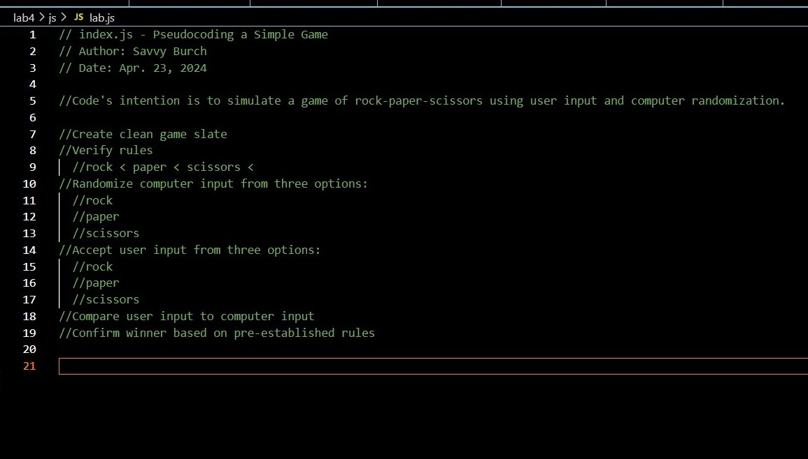
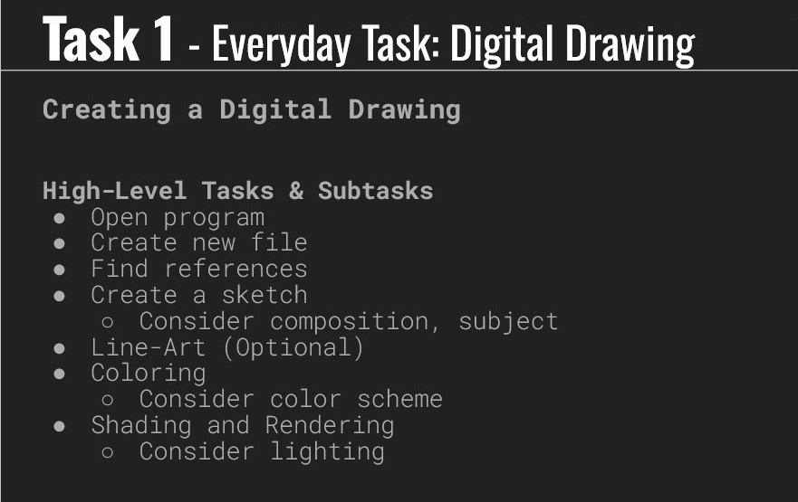
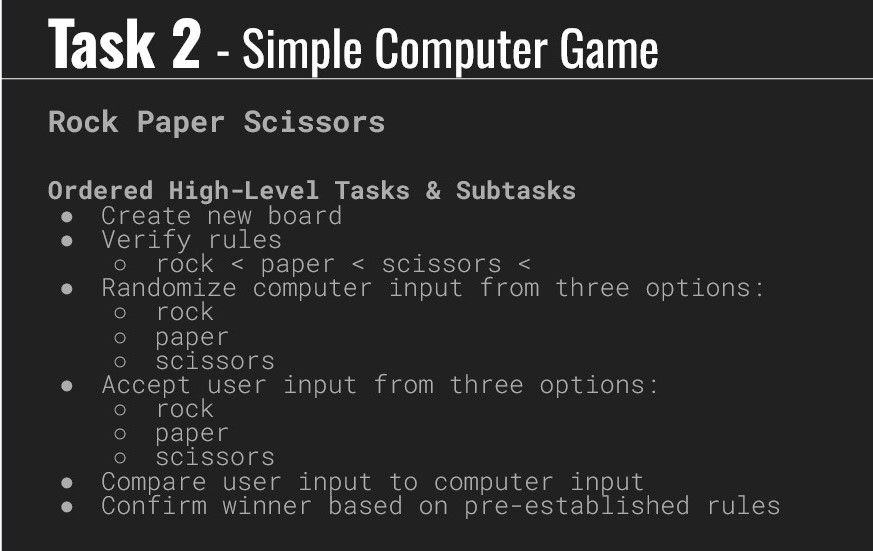

lab 4: pseudocoding
challenge
after learning the concept of pseudocoding to do everyday tasks, we created a pseudocode to ease into javascript.
problems
the biggest challenge was breaking apart the game of rock-paper-scissors into something a computer could digest. my previous experience with Python came in handy.
reflection
i'm both excited and nervous to start learning Javascript. i hope that my previous experience with Python will help me with learning.
results

//Create clean game slate
//Verify rules
//rock < paper < scissors <
//Randomize computer input from three options:
//rock
//paper
//scissors
//Accept user input from three options:
//rock
//paper
//scissors
//Compare user input to computer input
//Confirm winner based on pre-established rules